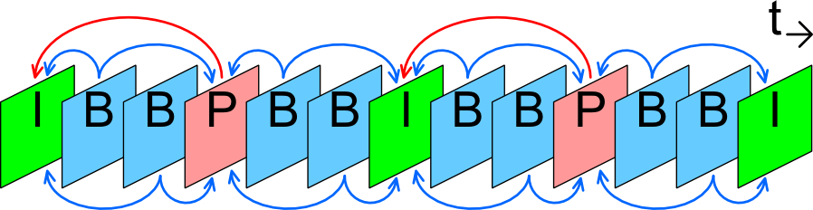
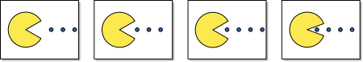
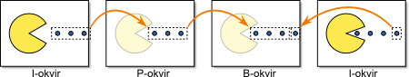
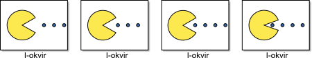

Licenca
To delo je na voljo pod pogoji slovenske licence Creative Commons 2.5:
priznanje avtorstva - nekomercialno - deljenje pod enakimi pogoji.
Celotna licenca je na voljo na spletu na naslovu http://creativecommons.org/licenses/by-nc-sa/2.5/si/. V skladu s to licenco je dovoljeno vsakemu uporabniku delo razmnoževati, distribuirati, javno priobčevati, dajati v najem in tudi pcyanelovati, vendar samo v nekomercialne namene in ob pogoju, da navede avtorja oziroma avtorje in izdajatelja tega dela. Če uporabnik delo pcyanela, kar pomeni, da ga spremeni, preoblikuje, prevede ali uporabi to delo v svojem delu, lahko predelavo dela ponudi na voljo le pod pogoji, ki so enaki pogojem iz te licence oziroma pod enako licenco.

Zgoščevanje videa
Video moramo zgostiti, v nasprotnem primeru so datoteke enostavno prevelike, da bi jih lahko prenašali preko spleta ali pa si jih preko spleta ogledovali. Obstajata dve bistveno različni vrsti zgoščevanja videa (ang. video compression):
- zgoščevanje znotraj okvirjev (ang. intraframe compression – All-I)
- zgoščevanje med okvirji (ang. interframe compression – IPB)
Zgoščevanje med okvirji
Posamezni okvir, ki ga med zgoščevanjem obdržimo v celoti, se imenuje I-okvir (ang. I-frame, intraframe), včasih ga imenujemo tudi ključni okvir (ang. keyframe); naslednjih 12 do 15 okvirjev sestavljajo napovedani okvirji (ang. P-frame, predicted frame), ki zapisujejo samo spremembe slike glede na prejšnji okvir in dvosmerni napovedani okvirji (ang. B-frame, bi-directional predicted frame), ki zapisujejo spremembe slike glede na prejšnji in naslednji okvir.

I-okvirje uporabljamo kot referenčne okvirje za pomoč pri predvidevanju sprememb P-okvirjev in B-okvirjev med procesom zgoščevanja. Kot primer vzemimo videoposnetek intervjuja. Pri I-okvirjih shranjujemo oziroma zapisujemo celoten okvir, medtem, ko pri P-okvirjih in B-okvirjih ne upoštevamo stacionarnega ozadja, ki se ne spreminja, ampak zapisujemo le spremembe gibanja intervjuvanca. Zgoščevanje in razširjanje videoposnetkov z metodo IPB vključuje zapleten izračun, ki pri računalniški obdelavi zahteva večjo procesorsko moč.
Pri zgoščevanju videoposnetkov skupina slik (ang. group of pictures – GOP) ali struktura GOP določa vrstni red, v katerem so urejeni I-okvirji in med-okvirji (P-okvirji in B-okvirji). GOP je zbirka zaporednih slik v zgoščenem videoposnetku. Vsak zgoščeni video tok je sestavljen iz zaporednih GOP-ov, iz katerih se ustvarjajo vidni okvirji. Nov GOP v zgoščenem video toku pomeni, da dekoder ne potrebuje predhodnih okvirjev, da bi dekodiral naslednje okvirje, kar omogoča hitro pregledovanje videoposnetka.
Izvirni videoposnetek

IPB zgoščeni videoposnetek

Zgoščevanje znotraj okvirjev
Pri zgoščevanju znotraj okvirjev (All-I) vse okvirje obravnavamo kot I-okvirje (ang. I-frames, intraframes) oziroma ključne okvirje (ang. keyframes). Z drugimi besedami to pomeni, da vsak okvir stisnemo, vendar ga obravnavamo ločeno, kot eno samo sliko.
Video datoteke, zgoščene z zgoščevanjem znotraj okvirjev so približno trikrat večje od video datotek, zgoščenih z zgoščevanjem med okvirji. Zgoščevanje
Kljub nizki stopnji zgoščevanja in možnosti urejanja oziroma montaže videoposnetka po posameznih okvirjih, potrebuje
Izvirni videoposnetek
All-I zgoščeni videoposnetek
